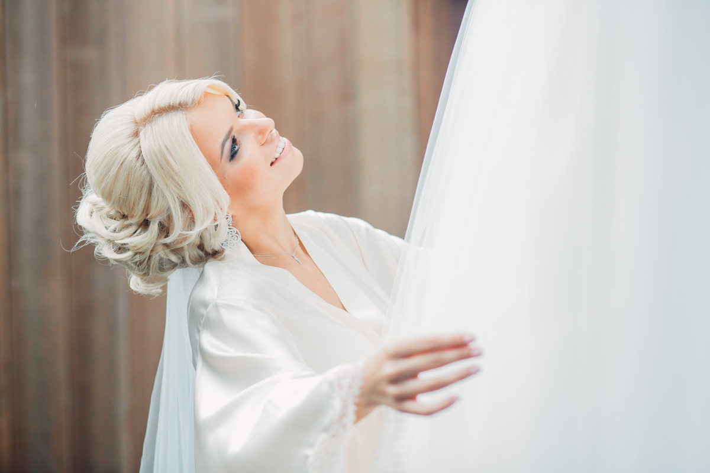
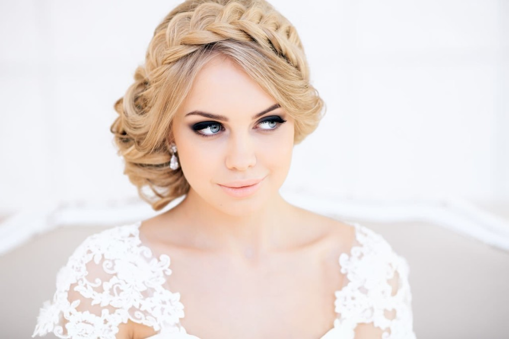
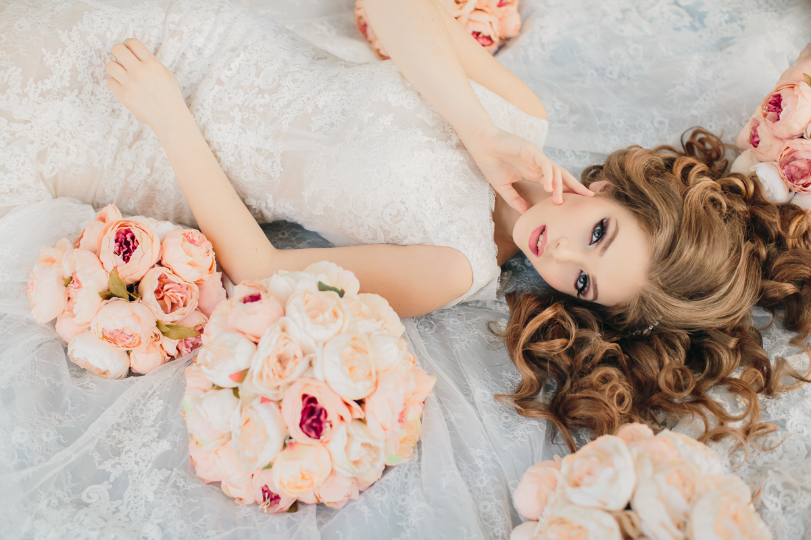
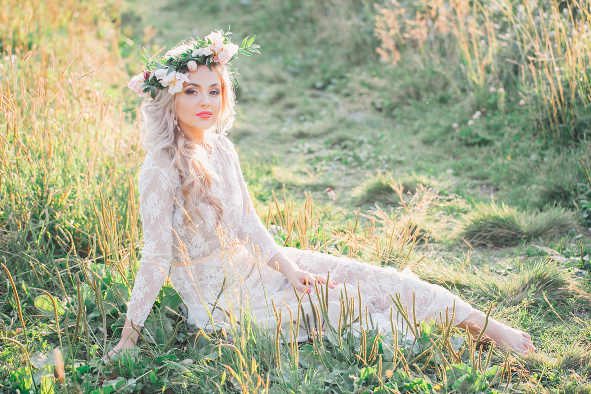
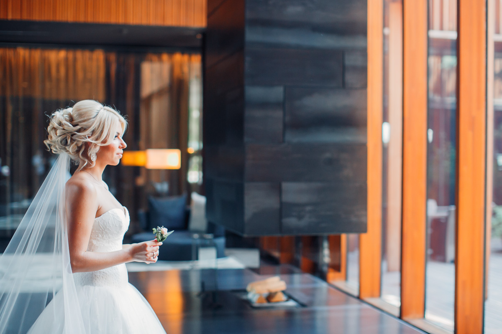
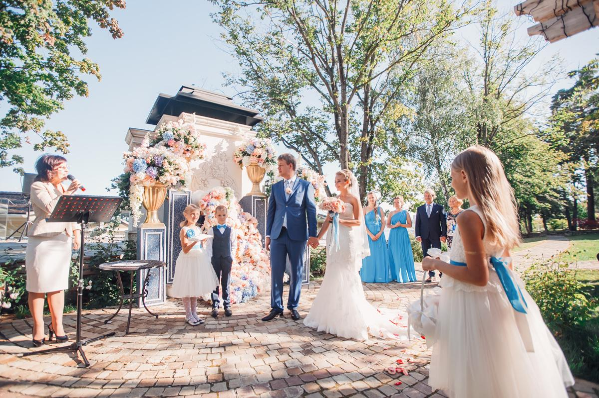

Getting married is one of the most important times in a woman’s life, and choosing a wedding hairstyle can be one of the most overwhelming decisions to make.
In fact, we ladies probably take longer to decide on a hairstyle than on the dress, and the decision relies on months of scanning through bridal magazines and poking around on Pinterest. Having worked with hundreds of different brides, I’ve decided to make a list of tips that may help you narrow down the right hairstyle.
Your dress must be the basis for everything else: the wedding hair, the accessories, the flowers.
Don’t force your stylist to commit to a single bridal hairstyle merely because, when you were 11, you wanted the same hairstyle as your favorite actress. This is about your personal style, and your dress is undeniably the centerpiece.
Find a dress that compliments you and makes you feel like a million bucks, and a good wedding stylist will make a hairstyle compliment your dress.
If you have a very busy dress, with lots of beads and details, you will need to make your bridal hairdo take the backseat, and let the hair simply compliment the focal point.
If you are wearing a simple dress, you can style the hair up a bit more, but if you don’t feel comfortable having an updo, you won’t feel comfortable on the day.
Make your wedding hairstyle all about you--just the more glamorous expression of what you already have.
Your wedding day is incredibly important, but that doesn’t mean that you have to beat your hair into submission to be something that it’s not.
If you have very fine hair, accept that there are limitations with the texture of your hair. Don’t pressure your stylist into creating an abundance of hair when it is virtually impossible. They will do their best to accommodate you, but the result will likely disappoint you.
If you have loads of curls, don’t try to convince yourself that a sleek, straight hairstyle is going to work for you.
Find a few styles you like and take them with you to your trial hair appointment.
A good stylist who specializes in bridal hairstyles will be able to discuss all the options with you. He or she will take your dress into account, along with your hair texture, whether you’re wearing a veil or not, and whether you plan to wear accessories or flowers in your hair.
Find the style that best suits your hair, your personality, and the look you are after. Do not try to simply imitate something else without considering yourself first.
“And forget not that the earth delights to feel your bare feet and the winds long to play with your hair." [Khalil Gibran]
The one thing that many women tend to forget to take into consideration is the climate or environment of the wedding ceremony. Tropical, hot or humid – try to think about your personal comfort, because you absolutely do not want to be sweating your way down the aisle. Beach weddings tend to be a favorite and there’s nothing more glamorous than the wind playing with your hair. Tie it up slightly if you think it might irritate you. Your stylist might also recommend some products and tips that will help hold everything together. These days, there’s not much to worry about when it comes to making your hair work in harmony with its surroundings, but it often requires professional consideration.
It is vital to know what you’re dealing with well in advance of your wedding day. Just because your stylist is a specialist doesn’t mean they will necessarily be able to execute the hairstyle that you want. To avoid being stuck in this situation, book a trial in advance and do not stop searching until you are absolutely confident in your choice.
Stylist should make you feel comfortable enough to point out any changes you would like to make. Do not remain silent or compliant out of politeness if you want to change something--this is an important day, and your stylist is here for you, so help them help you!
The last tip might not be as foreign, but just in case, make sure you have everything else planned out before the final day. If you’re trying out extensions for the first time, make time well in advance of the wedding day to learn about the options. Do you know all the different types of clip-ins, microbead hair extensions, and heat fusion hair extensions? If you feel the need to Google it, chances are, you should!
Up or down, braids or curls, how you choose to wear your hair all depends on what works best with you and your dress. Just do your hair justice and make sure it highlights all the great features of your face in the best way possible. The look on your groom’s face will be worth it when you make your way down the aisle!